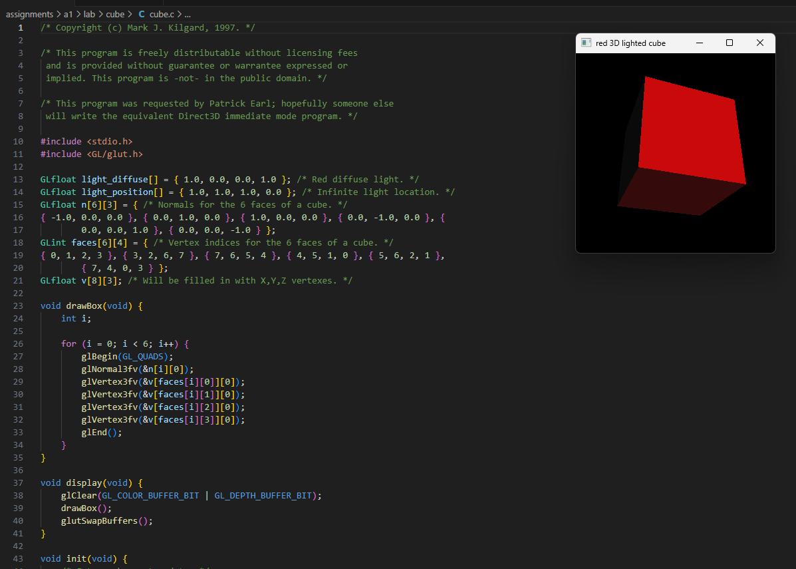
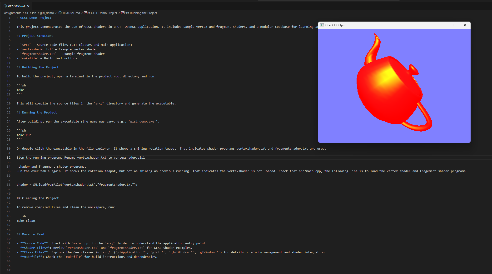
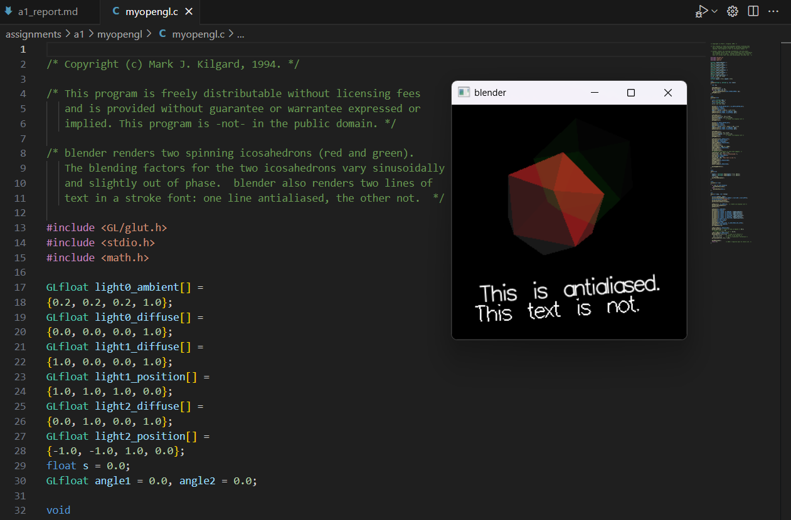
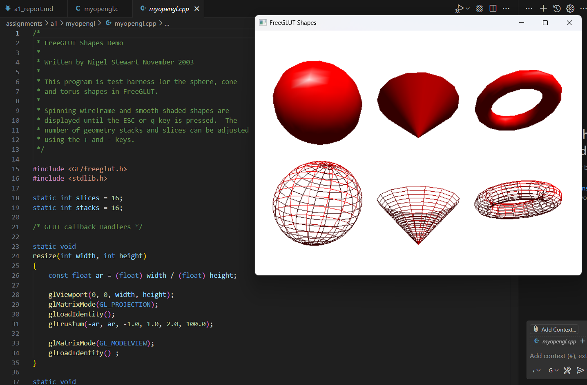

Author: sebastian gubacsi
Date: 2005-06-17
Check readme.txt for course work statement and self-evaluation.
Framebuffers are memory areas that store pixel data for display. Each pixel represents a tiny dot on the screen, and its color is determined by the color depth, which specifies how many bits are used for each pixel. Higher color depth allows more colors to be displayed. Resolution refers to the number of pixels arranged horizontally and vertically, affecting image clarity and detail.
A frame is a single image displayed on the screen. Refreshment is the process of updating the display with new frames. Refresh rate is the number of times per second the screen is updated, measured in hertz (Hz). Higher refresh rates result in smoother motion and less flicker.
The two basic image rendering approaches are rasterization and ray tracing. Rasterization converts 3D objects into pixels for display, focusing on speed and efficiency. Ray tracing simulates the path of light rays for realistic lighting and shadows, but is more computationally intensive.
Rasterization is commonly used because it is fast and efficient, making it suitable for real-time applications like video games and interactive graphics. It can quickly convert 3D models into 2D images with acceptable visual quality.
The CPU manages general system operations, runs the main program logic, and coordinates tasks such as input/output, memory management, and sending instructions to the GPU for graphics processing.
The GPU is specialized for parallel processing of graphics data. It handles rendering, shading, and complex calculations needed for images and animations, enabling fast and efficient graphics performance.
Complete? Yes
 
Complete? Yes

Complete? Yes

References